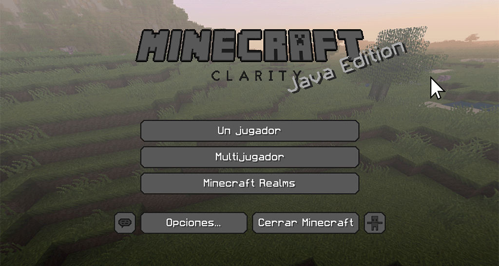
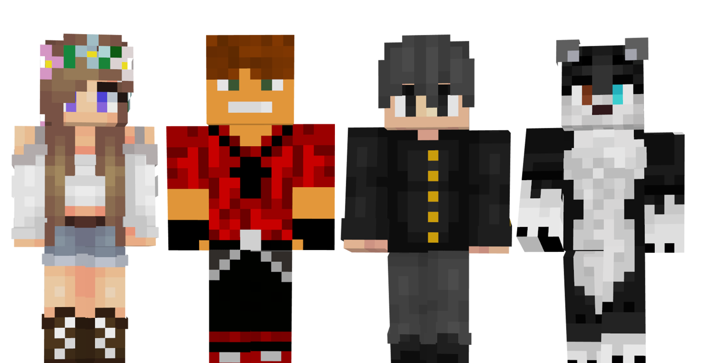

Estado del Servidor:
On line
IP DEL SERVIDOR: 45.35.63.82:19427
Servidor No Premium de Minecraft en Español con Minijuegos, misiones y plugins.
¡Trae a tus amigos y comienza la aventura!
Como entrar al servidor
- Copia la IP del servidor que se encuentra en la parte superior de esta página. Puedes hacer click sobre ella para copiarla al portapapeles
- En el menú principal de Minecraft, selecciona "Multijugador"
- Selecciona la opción de "Añadir servidor"
- Escribe el nombre del servidor en el campo de arriba, y pega ia IP del servidor en el campo de abajo (ctrl + v)
- Haz click en "Hecho". Ahora solo tienes que seleccionar el servidor de UpperLand y hacer click en "Entrar al servidor"

Normativa del servidor
- No se permite insultar ni faltar el respeto a nadie, ni jugadores ni Staff. Así como tampoco se permite mencionar, promocionar ni compartir cualquier tipo de contenido relacionado directa o indirectamente, y/o que aluda a un contexto no apto para personas menores de edad. El incumplimiento de esta norma será especialmente tenido en cuenta, y aquellos usuarios que la incumplan serán automaticamente sancionados.
- No está permitido el uso de “hacks” o “autoclicks”.
- No está permitido aprovecharse de bugs. Deberías informar de estos al staff en el canal de “BUGS-IMPORTANTES” de Discord, para que así podamos solucionarlos cuanto antes y no se vea comprometida la estabilidad del servidor.
- No se permite hacer SPAM de otros servidores
- No se permite mentir al Staff. Recuerda que estamos aquí para ayudar a que la experiencia de juego se óptima.
- No se permite abusar del chat. Si escribes todo en mayúsculas estarás incomodando al resto de jugadores
- No está permitido hacer granjas con muchos animales. Ten en cuenta que no tenemos los servidores de la NASA. Si creas el Arca de Noé en el jardín de tu casa puede que pete todo y tengamos que reiniciar el servidor :V
- No está permitido utilizar multicuentas. No hace falta que te inventes amigos ;D
- Por favor, no pidas objetos al Staff. Todos sabemos que el Creativo es la caja de Pandora, pero la gracia de jugar online es ganarte las cosas por tu cuenta y destacar en el ranking del servidor!
- No se permite el uso de objetos ilegales, porque son ilegales
- Cuida los espacios comunes. Bueno, los protegeremos por si acaso… XD
- Se permite grifear casas, zonas y en general todo lo que no esté protegido.
- Prohibido dejar redstone parpadeando.
Discord
¡Haz click en el botón para unirte a nuestro servidor de Discord y conectar con la comunidad!

